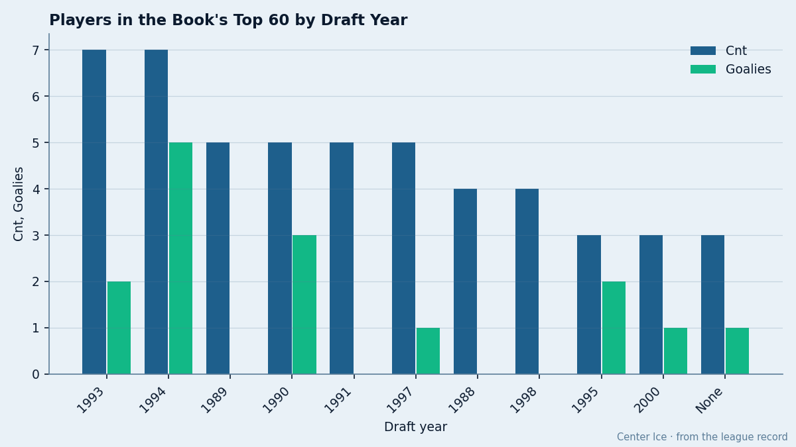

The 1994 Goaltending Draft: Five of the Book's Top 60 Sit in Net, and Four Were Picked After Round 4
Eight days before the rookie draft. The last great goaltending class was eleven years ago, produced five starters in the top 60, and nobody drafted any of them in the first round.
 Doug ReimerAnalytics editor, ex-video coach · The Slot Report
Doug ReimerAnalytics editor, ex-video coach · The Slot Report
The Book's top 60 this year contains five goaltenders drafted in 1994. No other draft year contributes more than two. The highest-drafted of the five is  Jose Theodore89, picked 44th overall in the second round. The other four went 124th, 218th, 219th and 226th.
Jose Theodore89, picked 44th overall in the second round. The other four went 124th, 218th, 219th and 226th.
With what the calendar has as the rookie draft falling on 2005-06-08, eight days from now, this is the class GMs are trying to replicate. None of them will find it the way 1994 did.
The five men
| Player | Club | Draft | Round | Overall | Salary | GP | Morale |
|---|---|---|---|---|---|---|---|
 Marty Turco95 Marty Turco95 |  Dallas Stars Dallas Stars | 1994 #124 | R5 | 94 | $0.60M | 68 | 95 |
| Jose Theodore |  Montreal Canadiens Montreal Canadiens | 1994 #44 | R2 | 91 | $5.50M | 66 | 94 |
 Evgeni Nabokov85 Evgeni Nabokov85 |  San Jose Sharks San Jose Sharks | 1994 #219 | R8 | 90 | $3.60M | 69 | 94 |
 Tomas Vokoun90 Tomas Vokoun90 |  Nashville Predators Nashville Predators | 1994 #226 | R8 | 90 | $0.90M | 66 | 84 |
 Johan Hedberg92 Johan Hedberg92 |  Pittsburgh Penguins Pittsburgh Penguins | 1994 #218 | R8 | 87 | $5.65M | 63 | 93 |
Four of the five were drafted in the fifth round or later. The scouting consensus in 1994 clearly did not see five top-60 goaltenders in the late rounds of that draft. The Bureau's Book, eleven seasons later, says the consensus was wrong.
What other years produced
The comparison to other draft years is not close.
| Draft Year | Goalies in Top 60 | Best Pick | Best Overall | Total Players in Top 60 |
|---|---|---|---|---|
| 1994 | 5 | #44 (Theodore) | 94 (Turco) | 7 |
| 1995 | 2 | #13 (Giguere) | 97 (Giguere) | 3 |
| 1993 | 2 | #10 (Thibault) | 90 (Thibault) | 7 |
| 1992 | 2 | #52 (Fernandez) | 92 (Khabibulin) | 3 |
| 1990 | 2 | #20 (Brodeur) | 91 (Brodeur) | 5 |
| 1997 | 1 | #4 (Luongo) | 94 (Luongo) | 5 |
1995 produced the highest-graded goaltender in the Book:  Jean-Sebastien Giguere97 at 97, drafted 13th overall. But that came with a top-15 pick spent on a goalie. The 1994 class found its five without spending a single first-round pick on the position.
Jean-Sebastien Giguere97 at 97, drafted 13th overall. But that came with a top-15 pick spent on a goalie. The 1994 class found its five without spending a single first-round pick on the position.
The 1993 class produced  Jocelyn Thibault89 at #10 (overall 90) and
Jocelyn Thibault89 at #10 (overall 90) and  Patrick Lalime88 at #156 (overall 90). That is the closest parallel: two top-60 goaltenders from one draft year, one early and one very late. 1994 has that pattern five times over.
Patrick Lalime88 at #156 (overall 90). That is the closest parallel: two top-60 goaltenders from one draft year, one early and one very late. 1994 has that pattern five times over.
The contract angle
Three of the five are free agents or about to become one. Turco ($0.60M, 0 years left), Theodore ($5.50M, 0 years left), and Nabokov ($3.60M, 0 years left) all walk this summer. Vokoun ($0.90M) and Hedberg ($5.65M) are further from the door but not far.
Turco at $0.60M with a 94 overall is the single best contract in the league by any measure. He played 68 games, led Dallas Stars to the Presidents' Trophy with 109 points, and will be 29 years old when free agency opens. That figure is the Bureau's Contract Ledger as published on Center Ice. It will not survive the summer.
Hedberg at $5.65M for an 87 overall is the inverse: an overpaid late-round pick whose career plateaued at a level still good enough to be a No. 1. His contract has years left. No club trades an 87 at that salary without taking back more than they give.
The combined salaries across all five sit at $19.25M for goaltenders with an average overall of 90.4. That is the output the scouting departments of every club in this league are trying to match with the 2004 draft they took last summer, and the 2005 class eight days out.
What it means for a GM sitting in the draft room
The Development Index has 20 goaltenders on its riser or faller list. Of those, exactly one is from the 1994 draft:  Pascal Leclaire93 at +4, and he is a 2001 draftee, not a 1994 one. The 1994 class has no one on the Index at all, risers or fallers. These five men are settled at their base grades.
Pascal Leclaire93 at +4, and he is a 2001 draftee, not a 1994 one. The 1994 class has no one on the Index at all, risers or fallers. These five men are settled at their base grades.

You find goaltenders in the late rounds, you wait four to seven years for them to develop, and you accept that for every Turco who emerges at #124 there are hundreds who wash out by the third year. The 1994 draft had 7 players in the top 60. The rest are below it, working third-string jobs or out of the league.
No GM picks up the phone on 2005-06-08 and finds five goaltenders in the top 60. They find one, maybe. And they find him in the fifth round, or they do not find him at all. A single class of scouts got these calls right while everyone else got them wrong, and that kind of thing does not repeat on a schedule.